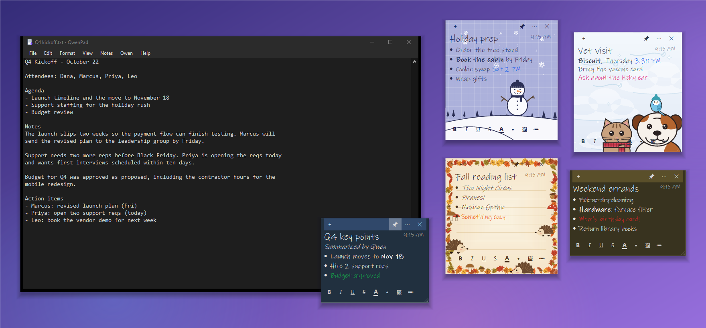
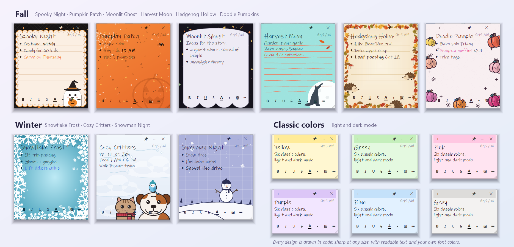
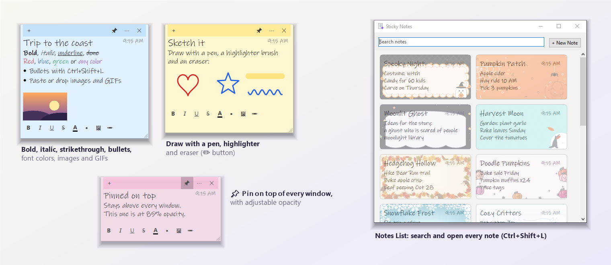

QwenPad
Beautiful desktop sticky notes and a tiny Notepad for Windows, with a private AI that runs on your own PC. Jot it down, make it pretty, pin it on top, and let Qwen3.5 tidy it up, 100% offline.

Sticky notes you'll actually enjoy
🎨 29 looks
23 hand-illustrated themes across Fall, Winter, Summer, Critters, Patterns and Sports, plus six classic colors, with a handwritten font, titles and dates. Fade any theme's art to a faint watermark.
✍️ Rich notes
Bold, italic, strikethrough, bullets, font colors, images, animated GIFs and freehand drawing with a pen, highlighter and eraser.
📌 Always in view
Pin notes above every window, set their opacity, and stack them with Ctrl+scroll. Each note is a real window.
🖥️ Stay on your desktop
Close QwenPad and your notes stay on screen. Turn on "Open Notes When Windows Starts" and they're back after every restart.
✦ AI in every note
Ctrl+K rewrites or adds to a note, untitled notes get titles, and a pasted email becomes a stack of task notes.
🛟 Never lose one
Crash-safe saves, a 30-day trash, daily backups and one-click import from other copies.


Sticky note shortcuts
| Shortcut | In a sticky note |
|---|---|
| Ctrl+N | New note beside this one, in the same design |
| Ctrl+K | Ask Qwen to rewrite the selection or write at the cursor |
| Ctrl+B / I / U / T | Bold, italic, underline, strikethrough |
| Ctrl+Shift+L | Bullets |
| Ctrl+P | Pin on top of all windows |
| Ctrl+W / Ctrl+D | Hide (stays saved) / delete (to the 30-day trash) |
| Ctrl+scroll | Move the note forward or back in the stack |
| Ctrl+Shift+L in the editor | Notes List: search and open every note |
Fast like Notepad. Smart like an AI editor. Private like paper.
⚡ Tiny and instant
A ~230 KB native app that opens in well under a second. No Electron, no installer, no account.
🔒 Truly offline
Qwen3.5 runs on your PC through llama.cpp. QwenPad only talks to 127.0.0.1, so your text never leaves the machine.
✦ AI where you type
Rewrite, fix grammar, change tone, translate, summarize or continue with one shortcut. It streams live and undoes in one step.
🌙 Dark mode
Follows Windows automatically, from the title bar and menus to the scrollbars and notes.
🎒 Portable
Unzip anywhere, even a USB stick. Settings, notes and models stay in one folder.
🖼 Make & edit images
The Image Studio turns a prompt into a picture, or edits one you drop in, with Qwen-Image-2.1 running locally. Research/evaluation license.
🆓 Free and open source
MIT licensed, with no ads, no subscription and no telemetry.
Your keyboard, supercharged

| Shortcut | What it does |
|---|---|
| Ctrl+K | Ask Qwen anything about the selection, or have it write at the cursor |
| Ctrl+Enter | Continue writing |
| Ctrl+Shift+I | Improve writing |
| Ctrl+Shift+G | Fix spelling & grammar |
| Esc | Stop generating |
Pick your model
| Model | Download | Best for |
|---|---|---|
| Qwen3.5 9B (recommended) | 5.3 GB | Best quality; ~8 GB free RAM |
| Qwen3.5 4B | 2.6 GB | Faster; low-RAM or CPU-only PCs |
| Qwen3.5 9B Abliterated | 5.2 GB | Community variant with refusal behavior removed |
| Any GGUF | Your choice | Drop a .gguf into models\ |
Light or dark

FAQ
Can I use the sticky notes without the AI?
Yes. Notes work fully without a model; the AI is there when you want it.
Can QwenPad generate images?
Yes. Qwen > Image Studio makes and edits images locally with Qwen-Image-2.1 (a separate ~11 GB download on first use). The weights are under the Qwen Research License — research and evaluation use; commercial use needs a license from Alibaba. Minutes per image on a small GPU; much faster on a stronger one.
Do my notes stay on screen after I close QwenPad?
Yes, by default. QwenPad waits in the tray with the model unloaded. Turn on Notes > Open Notes When Windows Starts to bring them back after every restart.
What if I delete a note by mistake?
Notes > Restore Deleted Notes brings back anything deleted in the last 30 days, and the backups folder keeps daily copies.
Does QwenPad work offline?
Yes. After a one-time model download, it runs Qwen3.5 locally through llama.cpp and only talks to 127.0.0.1.
Do I need an NVIDIA GPU?
No. A CUDA GPU makes it faster, but llama.cpp falls back to the CPU. Choose the 4B model on CPU-only PCs.
Is it free?
Yes, free and open source under the MIT license.
Can I use my own model or server?
Yes. Put any chat-capable GGUF in models\, or point QwenPad at any OpenAI-compatible server (llama.cpp, LM Studio, Ollama) in Qwen > Settings.